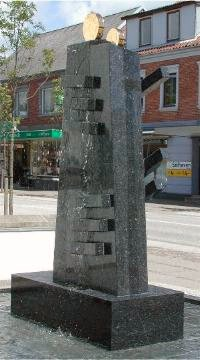

Sparegrisen
|
 |
|
Så har vi fået endnu en skulptur i Farsø by. I forbindelse med Farsø Sparekasses jubilæum blev der afsløret en ny skulptur ved Sparekassen ud mod Nørregade. Skulpturen er en gave til den by, som Sparekassen lever og arbejder i. I de seneste år er der kommet flere af den slags gaver til byen. Ved rådhuset har en privatperson skænket et springvand. Ved hovedindgangen til indkøbscentret har en anden bankvirksomhed skænket en skulptur. Gaverne er formentlig skænket i den bedste mening. Og så burde man vel være glad og fro ved det. Men jeg synes det er svært - altså bare at være glad. Og at være ligeglad dur jo heller ikke i længden. For standarden er meget lav. Bekymrende dårligt. Jeg mener: Et springvand ved Rådhuset, der mest af alt ligner et levn fra det tidligere DDR med rød stjerne, som næppe heller er det, giveren ønskede at sætte sig af mærke i sin by. Fuglene ved centrets hovedindgang ligner mest nogen, der sidder forundret tilbage og venter på, der skal komme vand i det mystiske bassinhul, de er lavet omkring. Og den seneste skulptur er endda lavet af en professionel kunstner ( som ikke engang er lokal, på trods af sloganet ellers er: vi sætter ting i sving - men det gælder åbenbart ikke lige de lokale kunstnere, der ellers kunne sættes i sving. Og det endda på trods af de bliver brugt i vores nabokommune, som er gået noget mere professionel til sagen, når det gælder byens udsmykning) og skulle symbolisere livets rytme, men ærligt talt: det ligner mest af alt en sparegris, hvori nogle gyldne pengestykker er på vej ned. Vi siger så tit: Smag og behag - og mener dermed, at det er forskelligt, og at det ikke kan diskuteres. Men i virkeligheden er det jo det eneste, der både kan og bør diskuteres. Det er da dejligt, at nogen gider bruge penge og energi på at forskønne vores by. Men hvad er det for kriterier, der ligger bag? Skal man bygge en vindmølle i det åbne landskab, så skal man spørge forskellige instanser og have lov, og der skal laves regionplaner og fanden og hans pumpestok. Skal man bygge et nyt stuehus i landzone, så skal amt og kommune spørges først. Men når det gælder opstilling af skulpturer midt på forskellige mere eller mindre offentlige pladser, som de fleste af os kommer på, så ser det ud til, at man kan få lov til lidt af hvert. Er det virkelig sådan, at man bliver så rørt ved tanken, at nogen vil give os noget, at vi tager mod hvad som helst. Det koster ganske vist ikke kommunen - altså os noget, der ikke har vores gæld i Sparekassen - men kan det passe, at vi skal sige både ja og tak til hvad som helst? Handelstandsforeningens slogan er: Farsø - her handles - men siger ordsproget ikke også: at hvor der handles, der spildes der også! Men skal vi virkelig spilde vores pladser og steder med anden rangs kunst? Tja - hvad siger din smag? Lad os tage diskussionen. Du er hermed inviteret! Troels Laursen Ullitshøjvej 102 Gl.Ullits 9640 Farsø |
| Hvis du vil svare på ovenstående og have dit svar bragt her, skal du sende det til webmaster på nedenstående emailadresse. Du kan skrive det direkte i dit emailprogram, eller du kan skrive i Words, Works ell. lignende og sende det som vedhæftet fil. Vi optager ikke anonyme indlæg. Derfor skal der underskrives med navn og adresse. Med venlig hilsen |